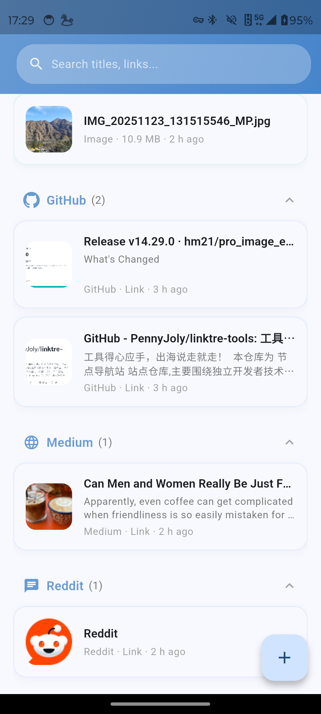
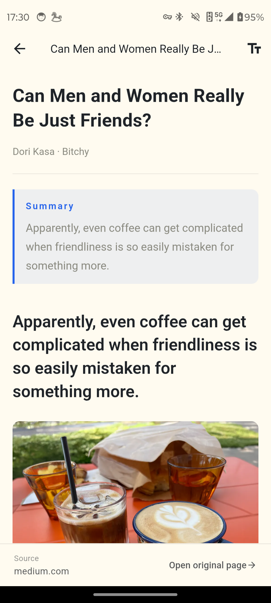
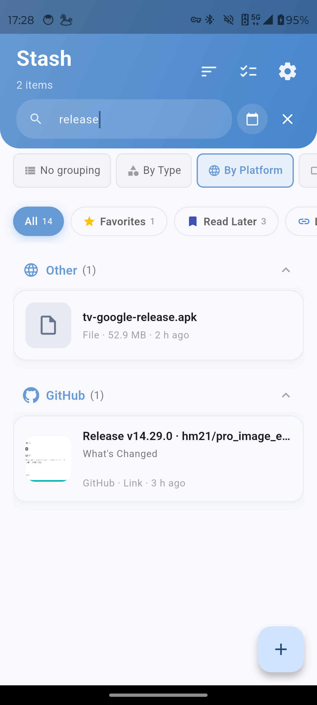
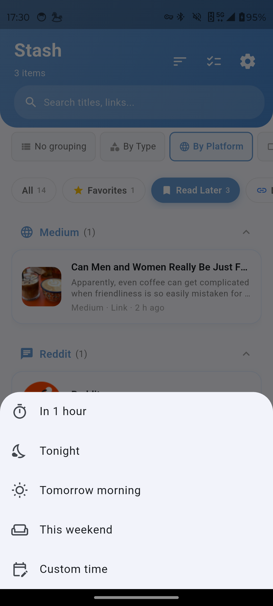

Stash: Bookmark & Link Saver · Android
Save anything.
Find it anytime.
A minimalist bookmark and link saver for Android phones and tablets. Share links, videos, photos, and files from any app into one organized library—with Reader Mode, instant search, and Read Later reminders.

Auto-organization
Grouped by platform or type—without manual folders
Stop digging through hundreds of unsorted browser tabs. Stash automatically groups what you save by source—like GitHub, Medium, or Reddit—or by file type, with one-tap filters for Favorites and Read Later.
- Switch between By Platform, By Type, or flat list anytime
- Keep links, photos, videos, PDFs, and APKs side by side
- Pin important items to Favorites or queue them in Read Later

Reader Mode
Read saved articles without clutter
Open saved web pages in a clean, warm reading view with a short summary at the top and adjustable typography—free from pop-ups and distractions.
- Quick summary card at the top of each article
- Clean paper-toned layout with customizable text size
- Jump to the original source page in one tap

Fast retrieval
Search across links, titles, and files at once
Whether it is a GitHub release link, a saved article, or a local file, type a keyword or pick a date filter to pull it up immediately.
- Unified search across web bookmarks and saved files
- Filter results by date, platform, or type
- No need to remember which app you originally saved it from

Read Later Reminders
Come back to what matters
Good links shouldn't disappear into a bookmark graveyard. Set a quick reminder so Stash nudges you when you actually have time to read or watch.
- One-tap presets: In 1 hour, Tonight, Tomorrow morning, This weekend
- Pick any custom date and time for follow-ups
- Pairs directly with your Read Later queue

How it works
-
01
Share from any app
Tap Share in Chrome, Reddit, YouTube, or your file manager and pick Stash.
-
02
Sorted automatically
Stash groups your item by platform and type—ready for Favorites or Read Later.
-
03
Read or find anytime
Search in seconds, open in Reader Mode, or get reminded when it's time.
At a glance
Questions
What can I save in Stash?
You can save web links, articles, photos, videos, PDFs, APKs, and everyday files. Anything you share from Chrome, Reddit, Medium, GitHub, YouTube, or other Android apps can be stored in one place.
How does Stash organize saved bookmarks without messy folders?
Stash automatically groups saved items by platform (such as GitHub, Medium, or Reddit) or by content type (links, images, videos, files). You can also filter by Favorites and Read Later in one tap.
Does Stash have a built-in Reader Mode?
Yes. Saved articles open in a clean, distraction-free Reader Mode with a quick summary at the top, adjustable text settings, and a direct button to open the original webpage whenever needed.
Can I set reminders to read saved links later?
Yes. You can mark any item as Read Later and schedule a reminder for in 1 hour, tonight, tomorrow morning, this weekend, or any custom date and time.
Is Stash free, or is there a one-time lifetime purchase?
Stash is free to download and try on Google Play. To unlock full features, you can choose either a flexible subscription or a one-time lifetime purchase with no recurring charges.
Keep what matters.
Download Stash on Google Play—free to try, with a one-time lifetime option if you prefer not to subscribe.
Get Stash on Google Play